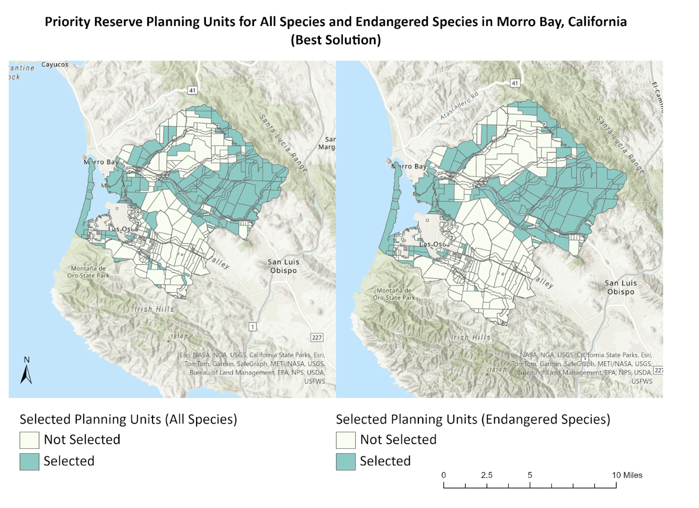
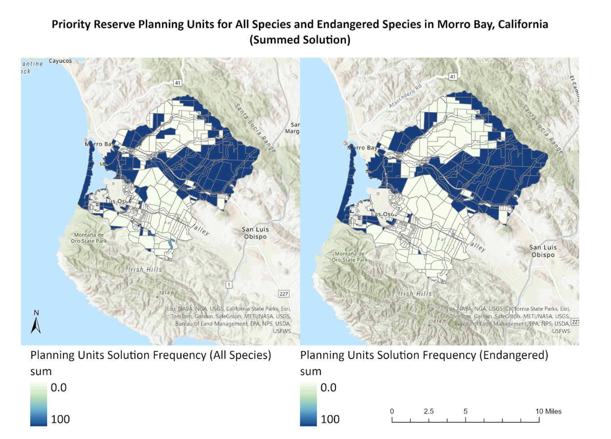

Code
#load libraries
library(knitr)
library(kableExtra)
library(tidyverse)Natalie Smith & Thuy-Tien Bui
September 21, 2024
Feeback to incorporate:
One thing to remember and maybe note in the writing is that we were implementing and solving a Marxan-style problem using Prioritizr. This could be valuable to avoid confusion that you actually used Marxan.
I appreciated that you dug a bit deeper into the analysis to look at the total area in the best solution reserves for all vs endangered species. Iʻm less clear about how you arrived at planning units 5 and 6 being the “most suitable”. There are quite a large number of locked in planning units that are included in the reserve no matter what.
Another way to strengthen the write up would be to look at particular areas that were selected and the underlying land cover.
Additionally, the planning units selected between 1-99 times could be of interest. Due to the large amount of locked in parcels that are always included, the planning units selected some medium number of times are actually more interesting because these are planning units that are not already locked in, but the model is recognizing them as having conservation value.
Morro Bay is a critical ecological area that supports diverse habitats and numerous species, many of which are endangered (Crandall, 2017). Protecting the region is essential for managing biodiversity and ecosystem health. Utilizing a Marxan-style analysis using Prioritizr allows for the identification of the least costly areas for conservation, ensuring efficient allocation of resources.
Given limited resources and funds, it is necessary to optimize protected area planning by prioritizing multiple conservation targets and objectives. In order to select optimal locations for a preserve in Morro Bay and meet the target of conserving 30% of selected species ranges, a data-driven decision-making analysis can be used to prioritize lowest-cost areas that meet optimal targets.
The lowest-cost reserve model was constructed using prepared species and parcel data. To identify priority areas, we implemented the marxan_problem() function in R Studio, defining the conservation planning problem and setting the necessary parameters and constraints (see Appendix A). This framework allowed us to identify optimal conservation solutions efficiently. To enhance the model’s performance, we integrated the Gurobi solver, configuring it with a 0% optimality gap (gap = 0) to ensure one optimal solution as the output. By using Gurobi, we were able to run multiple solution iterations quickly and effectively, resulting in high accuracy in identifying priority conservation areas. In the solution output of this model, ‘0’ indicates that the planning unit was excluded, while a ‘1’ indicates its inclusion in the optimal solution. Additionally, we constructed a portfolio model to account for potential conservation constraints and display a range of solutions. Building upon our initial marxan_problem, we set an optimality threshold of 15%, allowing for solutions within 15% of the optimal solution. The model was run 100 times to explore variability and robustness in the results. We summed the solutions to calculate the selection frequency of each planning unit across all iterations. To identify priority areas for endangered species, we isolated endangered species in the initial species dataset and repeated this analysis. To visualize our results, we joined the optimal and portfolio results by ID with the Morro Bay parcels shapefile, respectively. This integration allowed us to identify locations and acreage of selected planning parcels based on the best solution results and the summed selection frequencies from the portfolio analysis.
When applying the best-fit model to all species as well as endangered species, our results indicated that planning units 5 and 6 were the most suitable options for achieving conservation targets for 30% of each species’ range. Figure 1 shows the selected planning units under the best solution for all species and endangered species. In the portfolio model, planning unit 6 also emerged as the best choice, aligning with our optimal solution, as it displayed the highest selection frequency with a sum of 100. However, it is important to note that planning unit 6 is a locked-in unit, meaning it will always be included in the solution, which contributes to its highest summed value. Figure 2 shows a spectrum of selection frequencies for planning units for all species and endangered species. The table below shows the differences in selected planning unit acreage between all species and endangered species for both solution types.
#make a dataframe with selected information:
solution_type <- c("Best Solution", "Summed Solution")
planning_unit_selection_parameters <- c("Selected", "100 Frequency")
all_species_acreage <- c("21,317.99", "20,748.83")
endangered_species_acreage <- c("19,949.90", "19,908.43
")
percent_change <- c("-6%", "-4%")
#make the dataframes into a table
table <- data.frame(solution_type, planning_unit_selection_parameters, all_species_acreage,endangered_species_acreage,percent_change)
# Rename columns
colnames(table) <- c("Solution Type", "Planning Unit Selection Parameter", "All Species (Acres)", "Endangered Species (Acres)", "Percent Change") #make a kable table
kable(table,
caption = "Table 1: Planning Unit Acreage and Percent Change Between All Species and Endangered Species Under Best and Portfolio Solutions.") %>%
kable_styling(bootstrap_options = c("striped", "hover", "condensed", "responsive"),
full_width = FALSE,
font_size = 10) %>%
column_spec(1, bold = TRUE) %>%
row_spec(0, bold = TRUE, background = "#D3D3D3")| Solution Type | Planning Unit Selection Parameter | All Species (Acres) | Endangered Species (Acres) | Percent Change |
|---|---|---|---|---|
| Best Solution | Selected | 21,317.99 | 19,949.90 | -6% |
| Summed Solution | 100 Frequency | 20,748.83 | 19,908.43 | -4% |


The results emphasize the importance of prioritizing planning units 5 and 6 for conservation in the Morro Bay watershed, which effectively meets 30% of the representation targets for various species. Isolating endangered species as a primary target allows for a more targeted conservation strategy, which may lead to more specific reserve placement, ensuring vulnerable species receive necessary protection. There was a 6% decrease in selected planning unit acreage when considering only endangered species compared to all species under the best solution. Similarly, in the portfolio solution, the selected planning units with the highest frequency decreased by 4% in the area when considering only endangered species. While being more resource-efficient in protecting a smaller area, the endangered species approach may overlook other important species or habitats. Engaging local stakeholders—who rely on tourism, fishing, and other livelihoods—is crucial for identifying conservation needs. If the best parcels are unavailable, considering near-optimal solutions, as indicated in the portfolio analysis, may be necessary to balance ecological goals with community well-being.